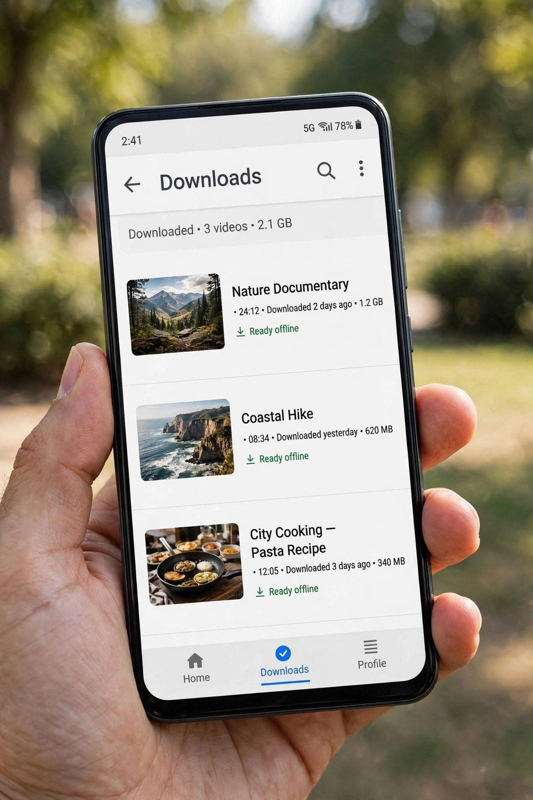

How to Download YouTube Videos on Android: Every Working Method
Save YouTube videos on your Android phone with the official app, plus storage and quality tips.
Android is the most flexible place to save YouTube videos, because the official YouTube app has a built-in download feature and Android gives you clear control over storage. This guide covers the official method in detail, how to manage quality and storage so downloads do not fill your phone, and what to do when a video refuses to download. Everything here uses the official app, so you do not need to sideload anything or grant risky permissions to an unknown downloader.
Download with the YouTube app
Open the YouTube app, sign in, and open the video. Tap Download below the player, pick a quality, and the download starts. You can watch progress in the Library tab under Downloads. Once finished, the video plays offline with no buffering, which is ideal for flights, commutes, and areas with weak signal. Downloads are tied to your account and your subscription if you use Premium, and they are encrypted inside the app, so they will not appear in your photo gallery or file manager as playable video files.
Pick the right quality and storage
A one-hour video at 1080p can take over 1.5 GB, while the same hour at 360p takes roughly 250 MB. If your phone has 64 GB of storage and you want several videos for a trip, 480p is a sensible compromise. In the app, go to Settings, then Downloads, to set the default quality and to choose whether downloads use Wi-Fi only. The Wi-Fi-only setting is worth enabling, because a long video downloaded over mobile data can eat a monthly allowance in a single afternoon.
Manage and delete downloads
Downloads accumulate quietly, so check the Downloads page regularly. Each entry shows its size, and you can delete individual videos or clear everything at once. If your phone warns about low storage, downloaded videos are one of the first things to trim. You can also move the download location to an SD card on phones that support one, from Settings, then Downloads, then the storage location option. Keep the app updated, because download reliability improves with app updates.
When a video will not download
Some videos cannot be downloaded at all: music videos with licensing restrictions, videos the uploader excluded, live streams, and age-restricted content. If the Download button is missing, that is the reason in most cases. If downloads start but never finish, check free space, switch to Wi-Fi, and restart the app. If a downloaded video shows an error, delete it and download it again. Never install a random APK that promises to unlock every video; those files are a common source of malware on Android.
Download on Wi-Fi only
Mobile data is the most expensive way to download a video, and a single long download can use a large part of a monthly allowance. The YouTube app has a setting that limits downloads to Wi-Fi, and turning it on is one of the smartest things an Android user can do. You will find it in Settings, then Downloads, where you can also choose the default quality and the storage location. With Wi-Fi-only enabled, a download you start on mobile data simply waits until you are back on Wi-Fi, which is exactly what you want before a trip. It also prevents a half-finished download from stalling on a weak mobile signal and then restarting from the beginning. If your home Wi-Fi is slow, start downloads the night before and let them finish while you sleep. Your data plan, and your patience, will both be better for it.
Frequently Asked Questions
Where do downloaded videos go on Android?
They live inside the YouTube app under Library, then Downloads. They are not saved as separate files in your gallery.
Can I watch downloads without internet?
Yes, for up to 30 days. After that the app needs to reconnect once to renew the download.
Why is the Download button greyed out?
The uploader may have disabled downloads, or the video may be restricted, a live stream, or a music video with licensing limits.